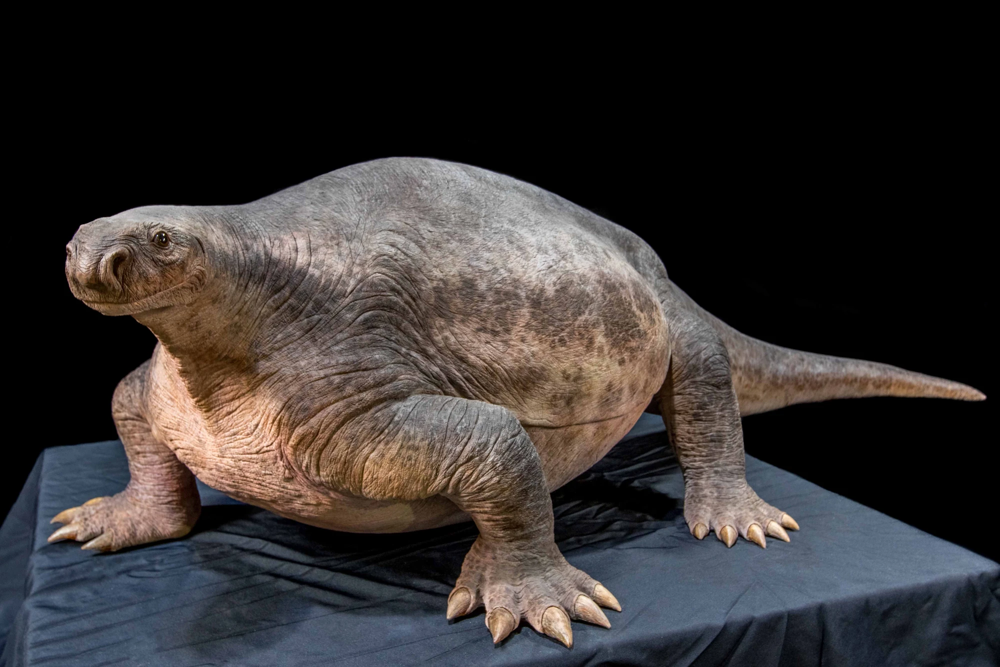

-
Pistoolgarnaal
ja, dat is een echt dier, en deze soort garnaal gebruikt een van zijn scharen als pistool

-
Cotylorynchus
Een prehistorisch en uitgestorven dier, er is een reden waarom het een favoriet is... de kop lijkt echt veel te klein voor zijn lichaam.
